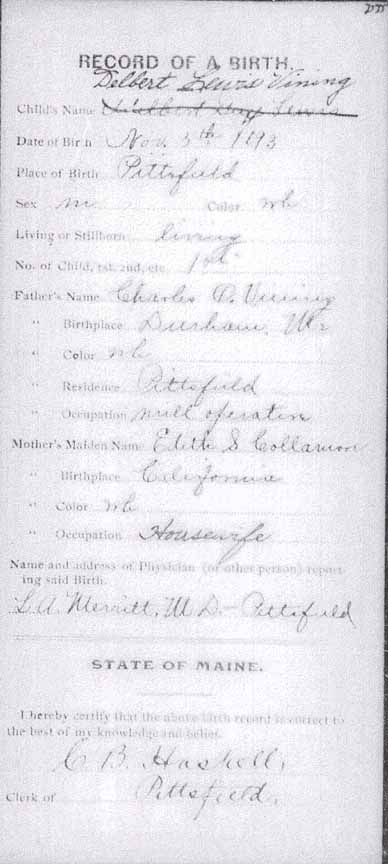
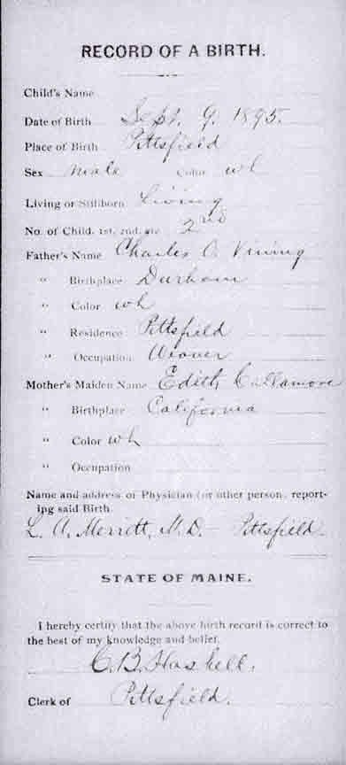
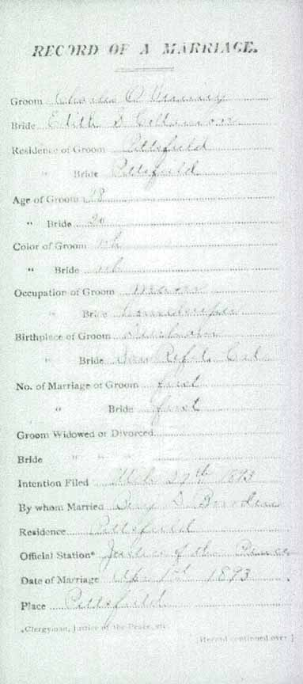
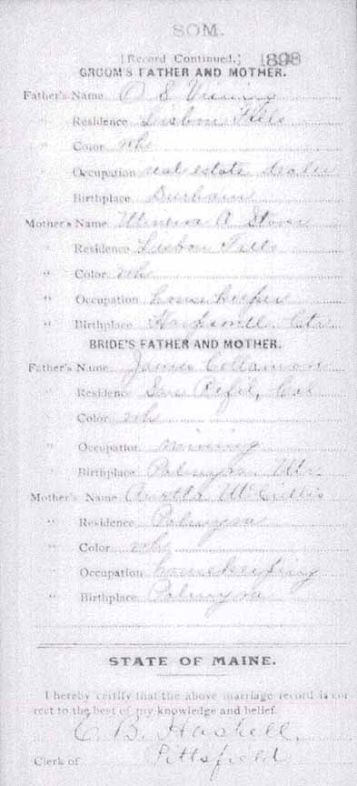

Birth Data
Birth records of Delbert Lewis Vining and Charles Otis Vining, sons of Charles Otis Vining and Edith S. Collamore (from Maine State Archives):

Marriage Data
Marriage record of Charles Otis Vining and Edith S. Collamore (from Maine State Archives):

Census Data
| 1900 | 1910 | 1920 | 1930 | |
| Charles Otis Vining | 46 | 55 | dead | |
| Edith S. (Collamore) Vining | 27 | 38 | 46 | dead |
| Delbert Lewis Vining | 6 | 16 | married and living in separate household | |
| Otis M. Vining | 4 | 14 | dead | |
| Velma D. Vining | 2 | 13 | not living in this household | |
| C[lau?]de E. Vining | 9 | not living in this household |


Death Data
Headstone for Edith S. (Collamore) Vining, Otis M. Vining, and Velma D. (Vining) Cook, in Pittsfield Village Cemetery, Pittsfield, Somerset County, Maine (from Find A Grave):